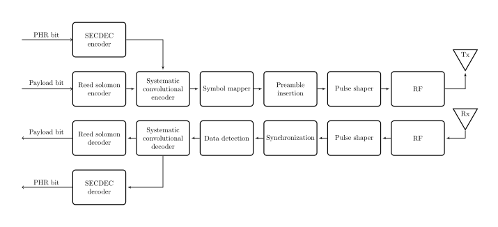
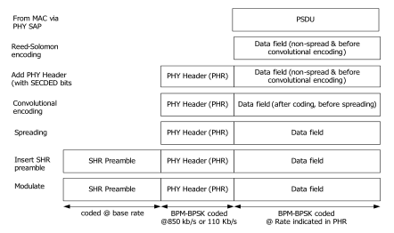
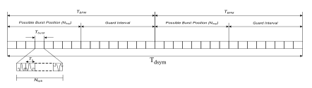
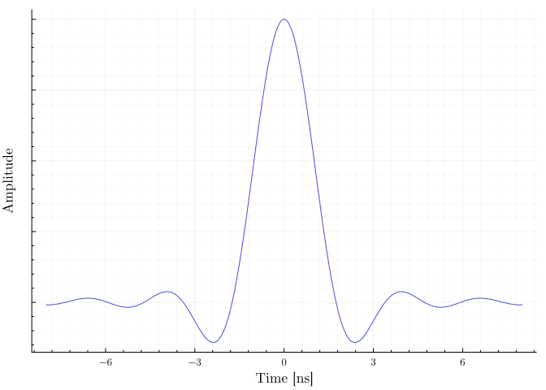
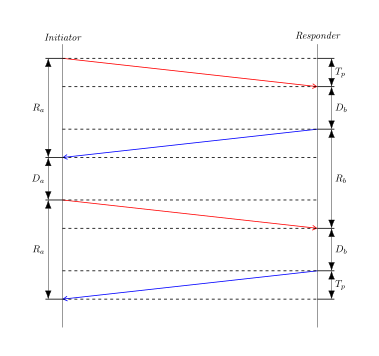

3 Ultra-wide band
The following chapter will introduce ultra-wide band by means of IEEE 802.15.4 [1]. There is another definiton by Federal Communications Commision (FCC), however it will not be discussed in this thesis.
To fully understand what ultra-wide band means it is necessary to define what bandwidth means by equation 3.1 and what center frequency means by equation 3.2.
\[ \mathrm{bandwidth_{-3 dB}} = f_{max} - f_{min} \tag{3.1}\]
\[ f_{center} = \frac{f_{max} - f_{min}}{2} = f_{0 db} \tag{3.2}\]
The ultra-wide band radio use bandwidth of 500 Mhz and more. This fact provides UWB with its unique ranging capabilities. The IEEE 802.15.4 Low-Rate Wireless Personal Area Networks [1] specifies physical and data link layers from the ISO-OSI network model 3.1.
Today UWB is mainly used in consumer electronics 1 or in a manufacturing plant to track assets, ground vehicles and people 23.

3.1 MAC layer
IEEE 802.15.4 describes the MAC layer for low-rate wireless personal networks, including UWB. The MAC layer is responsible for coordinating access to the shared wireless channel, managing network associations and disassociations, and providing security and reliability features. The MAC layer inserts a MAC header and a MAC footer before and after a network-layer frame, respectively. The MAC header contains information such as frame type, source and destination addresses, sequence number, and security parameters. The MAC footer contains a CRC check. The IEEE 802.15.4 MAC layer supports two modes of operation: beacon-enabled and non-beacon-enabled. In beacon-enabled mode, a coordinator device periodically broadcasts beacons to synchronize the devices in its network and allocate contention-free periods for data transmission. In non-beacon-enabled mode, devices use a slotted or unslotted carrier sense multiple access with collision avoidance (CSMA-CA) mechanism to access the channel. The exact layout of MAC frame format is described in Table [tbl-mac-frame].
‘
width=
|ccccccc|c|c| & & & & & & 0/5/6/10/14 & variable & 2
& & & & & & & &
& & & & &
&
| MAC |
| Payload |
Table 3.1: ?(caption)
& MFR
3.2 Physical Layer
The physical (PHY) layer of UWB was described in IEEE 802.15.4-2011 [1] as UWB PHY. Later in IEEE 802.15.4-2015 [3] the PHY was named as High repetition pulse (HRP) UWB PHY. This decision was made due to the introduction of Low repetition pulse (LRP) UWB PHY. Only the HRP UWB PHY will be discussed. The standard defines three operation bands:
- sub-gigahertz band consisting of single a channel spectrum from 249.6 MHz to 749.6 MHz.
- Low band with spectrum from 3.1 GHz to 4.8 GHz.
- High band with spectrum from 6 GHz to 10.6 GHz.

It uses an impulse radio signaling scheme with band-limited pulses and supports high data rates and precision ranging applications. It also uses a combination of burst position modulation (BPM) and binary phase-shift keying (BPSK) to modulate symbols. The overview of the physical layer is expressed in figure 3.2.
PPDU format
Each physical layer protocol data unit (PPDU) consists of a preamble, PHY header, and the data itself. The process of encoding the whole PPDU can be seen in figure 3.3.
Reed-Solomon encoding is used to encode the physical service data unit (PSDU) of the HRP UWB PHY. It adds redundant symbols to the original message symbols to form a codeword that can be decoded using polynomial interpolation or factorization techniques. Reed-Solomon encoding improves the error-correction performance of the HRP UWB PHY and enables it to handle burst errors or random errors that may occur in the wireless channel 4.
Convolutional encoding is used to encode the PSDU of the HRP UWB PHY after Reed-Solomon encoding. It uses a finite state machine with memory cells to generate output bits based on the current and previous input bits. It adds parity bits to the original information bits to form a codeword that can be decoded using Viterbi algorithm or other sequential decoding techniques. Convolutional encoding improves the error-correction performance of the HRP UWB PHY and enables it to handle noisy or fading channels.

A preamble in HRP UWB PHY is a sequence of known bits sent at the beginning of each frame. It is used for frame synchronization, channel estimation, and ranging measurements. It consists of two parts: a synchronization header (SHR) 3.4 and a physical layer header (PHR) 3.5.
The SHR contains a preamble symbol (SYNC) and a start-of-frame delimiter (SFD). The SFD is a fixed sequence of pulses that indicates the start of a frame. The PS is a burst of UWB pulses that can be modulated by burst position modulation (BPM) or binary phase-shift keying (BPSK). The preamble symbol repetitions (PSR) define the number of repeated sequences, ranging from 16 to 4,096 repetitions.
The PHR contains information about the data to be received, including the length of the data and the data rate used to transmit the data. It also contains additional information elements to facilitate ranging information exchange

3.2.1 Symbol structure
A symbol 3.7 is the basic unit of information in HWP UWB PHY. It consists of a short burst of UWB pulses that lasts for 2 ns and occupies a bandwidth of 0.5-1.3 GHz. The burst can be placed in one of the two possible burst intervals, and its phase can be inverted or not. These two choices allow each symbol to carry two bits of information using burst position modulation (BPM) and binary phase-shift keying (BPSK), a example of the modulation can be found in figure 3.6.
Burst hopping position is a parameter that determines the time position of the UWB pulses within a burst interval. Scrambling code is a pseudo-random sequence that is applied to the data bits before modulation. It is used to randomize the data bits and reduce the peak-to-average power ratio (PAPR) of the UWB pulses.

IEEE defines the reference pulse as a root-raised cosine pulse with roll-off factor \(\beta = 0.5\) 3.3.
\[ r(t) = \frac{4 \beta}{\pi \sqrt{T_p}} \frac{\cos{[(1+ \beta) \pi t / T_p]} + \frac{\sin{[(1 - \beta) \pi t / T_p}]}{4 \beta(t / T_p)}}{1-(4 \beta t / T_p)^2} \tag{3.3}\]
Parameter \(T_p\) stands for duration of the pulse. The duration is defined for each channel by table 3.2.
| Channel number | Pulse duration \(T_p\) (ns) | Main lobe width \(T_w\) (ns) |
|---|---|---|
| {0:3, 5:6, 8:10, 12:14} | 2.00 | 0.5 |
| 7 | 0.92 | 0.2 |
| {4, 11} | 0.75 | 0.2 |
| 15 | 0.74 | 0.2 |
Figure 3.8 further illustrates a waveform of the pulse. However an actual hardware system cannot fully realize the shape of the reference pulse. Therefore IEEE 802.15.4 constrains transmitted pulse \(p(t)\) by a cross-correlation function 3.4. For PHY to be IEEE compliant the main lobe of the transmitted pulse must have a magnitude of cross correlation \(|\phi(\tau)|\) at least 0.8, and the magnitude of sidelobes must not be greater than 0.3.
\[ \mathrm{\phi}(\tau) = \frac{1}{\sqrt{E_r E_p}} Re \int^{\infty}_{-\infty} \mathrm{r}(t) \mathrm{p}(t - \tau) \mathrm{dt} \tag{3.4}\] Where:
\[\begin{aligned} E_r &= \text{energy of r(t)} \\ E_p &= \text{energy of p(t)} \\ \end{aligned}\]

3.3 Ranging techniques
Time Difference of Arrival
Time difference of arrival (TDOA) position estimation is a technique that uses the difference in the arrival times of UWB signals at multiple receivers to estimate the position of a transmitter.
TDOA position estimation requires at least four receivers for 3D localization and one transmitter. The receivers measure the time of arrival (TOA) of the UWB signals. The TOA measurements are then used to calculate the TDOA values between different pairs of receivers [6].
To estimate the position of the transmitter system of equations 3.5 is solved [4]. For
\[ \sqrt{\mathbf{x_r}^T \mathbf{\hat{x}}} - \sqrt{\mathbf{x_i}^T \mathbf{\hat{x}}} = c(t_r - t_i) \tag{3.5}\] Where:
\[\begin{aligned} \mathbf{\hat{x}} &= \text{estimated position of the transmitter.} \\ \mathbf{x_r} &= \text{Position of the reference receiver.} \\ \mathbf{x_i} &= \text{Position of receiver \textit{i}.} \\ t_r &= \text{Time of arrival for the reference receiver.} \\ t_r &= \text{Time of arrival for the receiver \textit{i}.} \\ c &= \text{Speed of light.} \\ \end{aligned}\]
The main challenge for implementing TDoA is synchronizing the clock across all receivers [5].
The TDoA system can be used in a variety of applications, such as indoor positioning, tracking of vehicles or people, and asset tracking. The accuracy of the TDoA system depends on the number and placement of the UWB sensors and the timing resolution of the system.
Two way ranging
Two-way ranging (TWR) is a technique used by UWB systems to estimate the distance between two devices. TWR requires two-way communication between two devices, where one device sends a signal to another device and waits for a response, as shown in figure 3.9. The time difference between the transmission and reception of the signal is used to calculate the distance between the two devices.

Single-sided two-way ranging (SS-TWR) is a technique where only one device sends a signal and waits for a response from another device. The time difference between the transmission and reception of the signal is used to calculate the distance between the two devices. \[ \mathrm{TOF} = \frac{R_a - D_b}{2} \] Where:
\[\begin{aligned} \mathrm{TOF} &= \text{Time of flight.} \\ R_a &= \text{Time of round trip} \\ D_b &= \text{Response delay.} \\ \end{aligned}\]
Double-sided two-way ranging (DS-TWR) is a technique where both devices send signals and wait for responses from each other. The time difference between the transmission and reception of signals from both devices is used to calculate the distance between them.
\[ \mathrm{TOF} = \frac{R_a R_b - D_a D_b}{R_a + D_a + R_b + D_b} \]
DS-TWR’s main advantage is its ability to compensate for the effect of clock drift [2]. Clock drift refers to several related phenomena where a clock does not run at exactly the same rate as a reference clock. That is, after some time the clock “drifts apart” or gradually desynchronizes from the other clock. All clocks are subject to drift, causing eventual divergence unless resynchronized. Clock drift can be caused by many factors, such as temperature changes, aging of components, and power supply voltage changes [2].
Angle of Arrival
Apple AirTag https://www.apple.com/airtag/↩︎
Siemens RTLS https://www.siemens.com/global/en/products/automation/industrial-identification/simatic-rtls.html/↩︎
Sewio real-time location system https://www.sewio.net/↩︎
Mathworks HRP UWB IEEE 802.15.4a/z Waveform Generation https://www.mathworks.com/help/comm/ug/hrp-uwb-ieee-802.15.4az-waveform-generation.html↩︎


No matching items